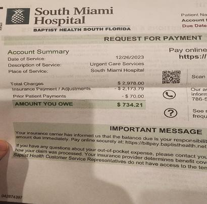
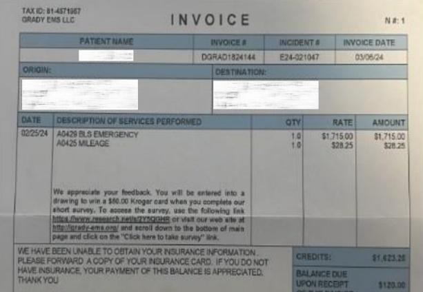
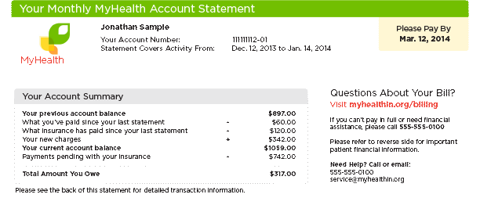
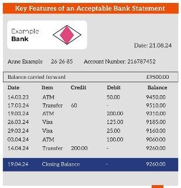
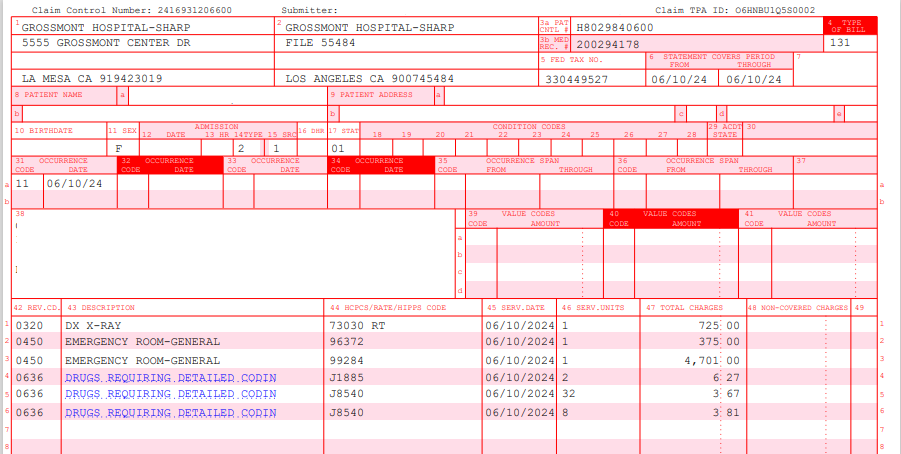
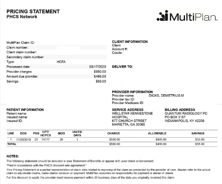

Many of us as students of English as a second language have heard these terms many times and have seen how they are sometimes used interchangeably, as if they were all the same thing: bill or invoice. But we do notice a difference in the term statement, and we may realize that it is not the simple invoice we are familiar with. However, we are still not sure when the term ”statement” should be used, who issues it and for what purpose. In addition, we have less often heard the term ‘claim’ as a kind of “invoice”, as we tend to refer to this term for different meanings, which perhaps have nothing to do with billing. So, what are the differences between all these terms?
I have worked for different companies over all these years, all of them multinational companies, and I have been lucky enough to work in the billing sector of all those companies, either as a customer service representative, dealing with billing claims and many other problems related to purchase orders, or in the area of invoice auditing and as a billing assistant too. Most of the time I was used to the term “bill” or “invoice” as I had to submit some invoices for payment and review most of them to solve customer´s claims and requests, but it wasn´t until I worked at a traveler’s insurance company that I learned other terms to refer to “invoice” or “billing”.
In one of my latest jobs, I worked as an administrative assistant for an international insurance company where I had to request patient information after a medical assistance service provided abroad. In that case, once a customer or patient received medical assistance abroad, I, on behalf of the insurance company, had to request the invoice plus the patient's medical report from the provider so that the audit team could then review the information and decide whether or not to pay for that service. It was at that time when I learned that I could get a simple “bill” from a hospital or an “invoice” from the same or different provider, and that they could also send me a “statement” or a “claim form”, but also that such a “claim form” was not sufficient to prove the customer's expenses if it was not properly detailed with a “breakdown of charges”.
So, I noticed that those terms were used for different purposes. Let’s see now their definitions and use in context, plus their possible translations.
Bill: a bill was a simple written document with a list of charges to be paid. It could be informal, as a note or reminder for the customer/client that they had to pay for the services rendered by the provider.
Practical example: I call the Baptist´s Hospital in Miami, in the US, and ask them for a patient´s invoice or claim, so they send me a bill, like a kind of “receipt” as a proof that the patient has been seen at their facility. However, for my company´s purposes and policy, that type of document is not appropriate, as it does not include sufficient information, such as the “codes” for each medical service, and it is not in a formal or legal form.

According to the dictionary of banking and finance, a bill can be: noun 1. a written list of charges to be paid: e.g.: - the sales assistant wrote out the bill. - Does the bill include VAT? - She left the country without paying her bills. 2. a list of charges in a restaurant (North American English usually check): e.g.: - Can I have the bill please? - The bill comes to £20 including service. 3. a written paper promising to pay money. verb to present a bill to someone so that it can be paid • The plumbers billed us for the repairs. The hospital billed the patient for the emergency room visit.
Traducción: n. factura; recibo, ticket. // cuenta, cobro. v. (to bill): facturar.
Invoice: An invoice was a more detailed document which included patient´s information, such as patient´s name, social security number (SSN), date of birth (DOB), date of service (DOS) and a brief summary of the charges, although it was still informal for the insurance company´s purposes.
Practical example: I call the Baptist´s Hospital in Miami again, and ask them for a patient´s invoice or claim which includes a more complete detail of the charges and services provided by them to the customer. However, for my company´s purposes and policy, that type of invoice is still not appropriate, as it does not include sufficient information, such as the “codes” for each medical service, and it is not in a formal or legal form for the purposes of an insurance company.

According to the dictionary of banking and finance an invoice can be: noun 1. a note asking for payment for goods or services supplied: - your invoice dated November 10th. 2. to settle or to pay an invoice: -They sent in their invoice six weeks late. - the total is payable within thirty days of invoice. - the total sum has to be paid within thirty days of the date on the invoice. Verb to send an invoice to someone: - we invoiced you on November 10th. The Memorial Hospital invoiced the insurance on Sept.29th.
itemized invoice: noun an invoice which lists each item separately.
Traducción: n. factura. v. (to invoice): facturar.
Beyond the scope of insurance companies, an invoice is a commercial document issued by a seller or provider to a buyer or consumer that itemizes and records a transaction between the two parties. It is typically sent by a business to its clients after goods have been delivered or services have been performed, but before payment is made.
Invoices serve as a formal request for payment and provide a detailed breakdown of the products or services provided, along with the total amount due and payment terms.
To summarize, a bill may include details of the customer/patient/consumer, but the purpose of this document is to obtain the payment for a service. An invoice includes what was produced, which services were provided, who purchased them and payment details. It contains more information than a simple bill. A bill is often immediately sent after production or services are rendered. An invoice, on the other hand, is sent anytime in the production process. A bill may not have a unique order number. An invoice has a unique number which is necessary for inventory tracking. Moreover, regarding payment terms, a bill usually requests immediate payment while an invoice may offer an extended term for payment (e.g. 45 days).
| Invoice | Bill | |
|---|---|---|
| Purpose | Request for payment | Statement of the amount due |
| Issuer | Seller or service provider | Seller, service provider, or utility company |
| Recipient | Buyer or client (e.g. the insurance company) | Customer or consumer (e.g. the patient). |
| Payment terms | Often includes due dates and terms | Usually requires immediate payment |
| Detail level | Typically more detailed | Can be less detailed |
| Legal status | Often has legal standing | May have less legal weight |
| Use in accounting | Used for accounts receivable | Used for accounts payable |
| Customization | Often customized with company branding | Usually standardized format |
Statement: A statement was a complete summary of the services rendered by a medical provider, similar to an invoice, but it did not necessarily request payment. It served as a summary of the charges, like a bank statement, but it was not a request for payment.
Practical example: I call the hospital and ask them again for a “more detailed” patient´s invoice or claim which includes a complete itemization of the charges and services provided by them to the customer. Although this type of document was still not appropriate for the audit department, it was useful for me, in order to have a clear and simple summary of all the services that customer has been rendered by the medical provider.


A statement is something that a customer can request from a business to check the status of their account. It may include past sales transactions, credits or payments. It's common for businesses to send regular statements to customers/patients who are on a payment schedule so they’re aware of how much they may still owe for their purchase. For example, a bank statement.
According to the dictionary of banking and finance a statement can be: noun (of account) a list of invoices and credits and debits sent by a supplier to a customer at the end of each month monthly or quarterly statement a statement which is sent every month or every quarter by the bank statement balance, balance per statement a balance in an account on a given date as shown in a bank statement.
itemized statement: noun a bank statement where each transaction is recorded in detail.
| Statement | Invoice | |
|---|---|---|
| Purposes and Functions | Inform an account status or remind a customer of outstanding numbers / charges | Request payment |
| Details | Fewer details on products and services | Detailed information about the products and services |
| Timing | Regular intervals | Typically sent out after each purchase of products or services, not necessarily immediately. |
| Payment terms | Not necessarily included | Included |
Traducción: estado de cuenta.
Claim: A claim was the formal or legal document that my company needed to obtain from a health provider in order to authorize the medical service that the patient had been rendered. In order to audit and finally approve the medical service to the patient, the company needed to attach the legal invoice or claim to the medical report and that's why I was not able to accept the simple bill or invoice or statement that the health providers sent me when requesting the patients’ information. It was such a hard task to obtain the proper documentation most of the time.
Practical example (and best scenario): I call the hospital and ask them again for a “more detailed” patient´s invoice or claim which includes a complete itemization of the charges and services provided by them to the customer. This term “claim” is especially used in insurance companies. The hospital/medical center/provider must send a “detailed /itemized claim” or a claim with a “breakdown” or the charges/codes. This is also referred as” CMS-1500 Claim Form” Example:

Definition of claim: 1. an act of asking for something that you feel you have a right to: the union put in a 6% wage claim. 2. an act of stating that something is a fact: Her claim that she had been authorized to take the money was demonstrably false. 3. an act of asking for money from an insurance company when something you insured against has taken place: to put in a claim: to ask the insurance company officially to pay damages: - She put in a claim for £250,000 damages against the driver of the other car. To settle a claim to agree to pay what is asked for: - The insurance company refused to settle his claim for storm damage. 4. The patient's medical bill that is sent to an insurance company for payment: “It's important to complete the CMS-1500 form correctly to ensure that healthcare providers are reimbursed accurately and on time for services rendered to patients”. verb 1. to ask for money, especially from an insurance company: He claimed £100,000 damages against the cleaning firm. She claimed for repairs to the car against her insurance policy.
Traducción: factura; formulario de reclamación médica. Formulario de reclamación de seguro médico CMS-1500.
Other terms used in billing
EOB: An Explanation of Benefits (EOB) issued by a company when they need to negotiate the terms of an invoice/bill. For example, the insurance company requests a collection entity or a health care provider a discount on the final total price of the invoice/claim form, so they send an EOB with a proposal. Also called “Pricing or repricing statement”.

Slip/receipt:
Sometimes referred to as simply “proof of payment”. A receipt is a document issued by a business to its customer after the customer has paid for items or services. It acts as a proof of payment for both the business and the customer. Payment receipts should include the business details, the original invoice number (if applicable), the date of payment, the amount paid and any remaining balance. Any time a payment is received from a customer, a receipt should be issued.
Practical example: Sometimes, when a provider did not receive the payment from the patient's insurance company, the debt was acquired by a collector entity. If that happened, we, as the patient's primary insurance company, had to call the collector and pay the due balance. After payment (with a corporate credit card), I had to request the credit card slip/receipt, which was necessary for our client to prove the patient had finally been released from the debt.
To conclude, if we look into the definition of the term “factura” in Spanish, for example, in the Cabanellas´ dictionary, we will find the following:
FACTURA: F., invoice, bill, charge slip.
In conclusion, invoices, bills, statements, claims and receipts each play a unique role in financial transactions. An invoice is a detailed request for payment, a bill is a simplified version of an invoice, a statement is similar to an invoice but it does not require payment, a claim is a type of invoice required by the insurance companies, and a receipt serves as a proof of payment. By understanding the differences between these terms, it will be easier for us to move through the world of finance with greater confidence and clarity.
Bibliography
- A & C Black London (2003). Dictionary of Banking and Finance. (Third edition)
- Jae K. Shim, PhD and Joel G. Siegel, Ph.D., CPA. (2000). Dictionary of Accounting Terms. (Third edition). Barron's Educational Series, Inc.
- Susan Ellis Wild. (2006). Webster's Law Dictionary. (First edition). WILEY Publishing, Inc.
Sobre la autora
Me llamo Gisele y soy estudiante del último tramo de la carrera de Traductorado Público en Idioma Inglés en la UNLa. Durante los años 2016-2020 trabajé en la empresa de seguro de viajes Universal Assistance, S.A., en la cual adquirí experiencia en el área de facturación y reclamos de seguros médicos, lo que me incentivó a escribir este artículo. Trabajo desde los 18 años y he tenido la suerte de estar siempre en empresas donde requerían el uso del idioma inglés. Actualmente trabajo para una empresa tercerizada de Amazon, como Account Manager para clientes de Reino Unido, EE.UU., AUS y Alemania. Disfruto trabajar en el área de facturación, administración y espero seguir capacitándome en esta hermosa profesión.